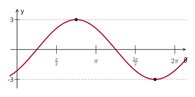
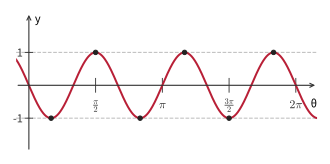
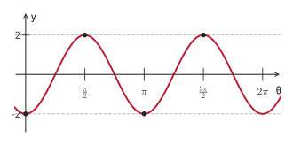

ホーム ＞ 数学II ＞ 一般角と三角関数のグラフ
別冊練習問題 4 の解答 y=A sin(bθ−c) の周期・最大最小・グラフ
(1) 関数 \(y=3\sin\left(\theta-\dfrac{\pi}{4}\right)\)（\(0\leqq\theta<2\pi\)）の周期、最大値・最小値と、そのときの \(\theta\) の値を求め、グラフをかけ。
周期・振幅・平行移動を読む
\(y=3\sin\left(\theta-\dfrac{\pi}{4}\right)=3\sin \left(\theta-\dfrac{\pi}{4}\right)\)。
\[\text{周期}=\dfrac{2\pi}{1}=2 \pi,\quad \text{振幅}=3,\quad \text{右へ }\dfrac{\pi}{4}\text{ だけ平行移動}\]最大値・最小値
\(-1\leqq\sin(\cdots)\leqq1\) だから
\[\text{最大値 }3,\qquad \text{最小値 }-3\]最大・最小になる \(\theta\)（\(0\leqq\theta<2\pi\)）
最大：\(\theta-\dfrac{\pi}{4}=\dfrac{\pi}{2}+2k\pi\) より
\[\theta=\dfrac{3 \pi}{4}\]最小：\(\theta-\dfrac{\pi}{4}=-\dfrac{\pi}{2}+2k\pi\) より
\[\theta=\dfrac{7 \pi}{4}\]グラフ
赤い曲線がグラフ（点は最大・最小）。

【答案】
\[\text{周期 }2 \pi,\ \text{最大値 }3\ (\theta=\dfrac{3 \pi}{4}),\ \text{最小値 }-3\ (\theta=\dfrac{7 \pi}{4})\]答
(2) 関数 \(y=1\sin\left(3\theta-\pi\right)\)（\(0\leqq\theta<2\pi\)）の周期、最大値・最小値と、そのときの \(\theta\) の値を求め、グラフをかけ。
周期・振幅・平行移動を読む
\(y=1\sin\left(3\theta-\pi\right)=1\sin 3\left(\theta-\dfrac{\pi}{3}\right)\)。
\[\text{周期}=\dfrac{2\pi}{3}=\dfrac{2 \pi}{3},\quad \text{振幅}=1,\quad \text{右へ }\dfrac{\pi}{3}\text{ だけ平行移動}\]最大値・最小値
\(-1\leqq\sin(\cdots)\leqq1\) だから
\[\text{最大値 }1,\qquad \text{最小値 }-1\]最大・最小になる \(\theta\)（\(0\leqq\theta<2\pi\)）
最大：\(3\theta-\pi=\dfrac{\pi}{2}+2k\pi\) より
\[\theta=\dfrac{\pi}{2},\ \dfrac{7 \pi}{6},\ \dfrac{11 \pi}{6}\]最小：\(3\theta-\pi=-\dfrac{\pi}{2}+2k\pi\) より
\[\theta=\dfrac{\pi}{6},\ \dfrac{5 \pi}{6},\ \dfrac{3 \pi}{2}\]グラフ
赤い曲線がグラフ（点は最大・最小）。

【答案】
\[\text{周期 }\dfrac{2 \pi}{3},\ \text{最大値 }1\ (\theta=\dfrac{\pi}{2},\ \dfrac{7 \pi}{6},\ \dfrac{11 \pi}{6}),\ \text{最小値 }-1\ (\theta=\dfrac{\pi}{6},\ \dfrac{5 \pi}{6},\ \dfrac{3 \pi}{2})\]答
(3) 関数 \(y=2\sin\left(2\theta-\dfrac{\pi}{2}\right)\)（\(0\leqq\theta<2\pi\)）の周期、最大値・最小値と、そのときの \(\theta\) の値を求め、グラフをかけ。
周期・振幅・平行移動を読む
\(y=2\sin\left(2\theta-\dfrac{\pi}{2}\right)=2\sin 2\left(\theta-\dfrac{\pi}{4}\right)\)。
\[\text{周期}=\dfrac{2\pi}{2}=\pi,\quad \text{振幅}=2,\quad \text{右へ }\dfrac{\pi}{4}\text{ だけ平行移動}\]最大値・最小値
\(-1\leqq\sin(\cdots)\leqq1\) だから
\[\text{最大値 }2,\qquad \text{最小値 }-2\]最大・最小になる \(\theta\)（\(0\leqq\theta<2\pi\)）
最大：\(2\theta-\dfrac{\pi}{2}=\dfrac{\pi}{2}+2k\pi\) より
\[\theta=\dfrac{\pi}{2},\ \dfrac{3 \pi}{2}\]最小：\(2\theta-\dfrac{\pi}{2}=-\dfrac{\pi}{2}+2k\pi\) より
\[\theta=0,\ \pi\]グラフ
赤い曲線がグラフ（点は最大・最小）。

【答案】
\[\text{周期 }\pi,\ \text{最大値 }2\ (\theta=\dfrac{\pi}{2},\ \dfrac{3 \pi}{2}),\ \text{最小値 }-2\ (\theta=0,\ \pi)\]答